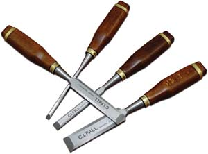
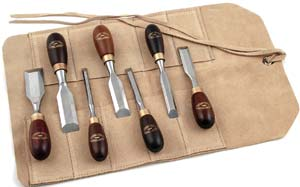
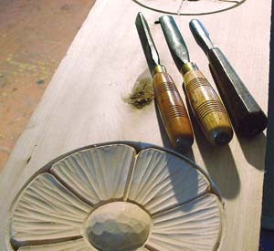
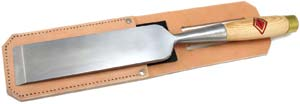
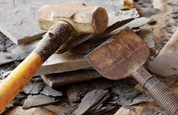

If you work with wood, stone or metal, sooner or later you’ll need a chisel. Whether you’re making furniture, installing doors and trim, shaping stone for a foundation or fireplace, or working with logs to build a timber-frame structure, chisels are essential tools for the job. Few tools offer so much utility in such a simple package . But there’s a catch: Even the best chisel isn’t worth much unless you use it appropriately and sharpen it well (see Tool Sharpening Made Simple).
If you’re just starting out with woodworking and cabinetry, a general-purpose set of “bevel-edge” chisels in quarter-, half-, three-quarter- and one-inch widths makes the most sense. This design has a relatively long blade with a flat bottom surface and angled corners along the top edges, making it perfect for creating hinge pockets, cutting woodworking joints and installing door handles and latches.
Are your hands small? The blades of “butt chisels” are shaped like bevel-edge chisels in cross section, but they’re roughly half as long. This makes them easier to hold and control, especially when you’re chiseling along a critical line. Butt chisels get their name because they’re well suited to cutting pockets for butt hinges, which are used on everything from fine cabinets to barn doors.
The key to quality in a woodworking chisel is the steel. It’s got to be hard enough to hold an edge, but not so hard that it becomes brittle. And sadly, you can’t buy excellent wood chisels just anywhere. Specialty woodworking supply outlets, such as Lee Valley, GarrettWade or Traditional Wood-worker, are the best places to find woodworking chisels of good quality. Expect to pay $30 to $70 for a decent set of four.
Other sources are yard sales and auctions. Antique chisels are almost always made of excellent steel, and often you can get them for good prices. Keep your eyes open and you might be lucky enough to find a piece of history that’s perfectly useful today. It will need sharpening, but you’ll need to hone most brand-new chisels anyway.
Living the good life is about more than just practicality. It’s also about making beautiful things with your hands in partnership with natural materials. That’s the philosophy behind the woodcarvings I add to things I build (see photos in A Handmade, Debt-free Home). Sure, decorative carvings take extra effort, but I consider it time well spent. What else can you say about visual details that make you feel good every time you see them?
Unlike bevel-edge chisels, carving chisels have angled or curved blades. You’ll need just three (see photo) to get started in woodcarving: a vee-shaped, three-eighths-inch, 45-degree parting tool; a half-inch #5 straight gouge; and a more curved, three-eighths-inch #7 straight gouge. Don’t be intimidated by the fancy names - these are basic tools, and the woodworking suppliers mentioned earlier offer them. They’ll cost $25 to $35 apiece, and with a good set, you can tackle a lifetime of classic carving designs.
If you have access to a woodlot and plan to harvest timbers for building frames, then you’ll need a really big chisel or two to create the interlocking mortise-and-tenon joinery that holds the timbers together. You can cut small timber frame joints with large bevel-edge chisels, but for most timber work you’ll need a “framing chisel.” Mine measures 2 inches wide, and it’s made to be struck with a large wooden mallet. At a cost of about $100, this tool isn’t cheap, but it’s such a specialized tool that the available supply is high-quality - any one you buy will be an excellent, durable tool.
Masonry chisels are entirely different from those made for wood, and the differences begin with the shape of the point. In contrast to the slender, razor-sharp edge on wood chisels, masonry chisels are tougher and more blunt. This allows them to stand up to harsh, abrasive conditions and hard pounding.
If you’re smoothing lumps of concrete or cutting a hole through a block wall, then you need a 1-inch-wide “cold chisel” (so called because they’re also used to cut cold metal). You’ll find them at hardware stores for about $15, and they come sharp enough to use. Just remember to take a close look at the angle of the tip before you start using the chisel. It won’t be long before you will need to re-establish that edge with a bench grinder. General-purpose cold chisels should be sharpened with a 60-degree bevel on the cutting edge.
Will you be cutting some bricks? The best brick chisels have a thin, 4-inch-wide blade and a rubber guard at the top of the handle. In case you miss with the hammer, this guard protects the back of your hand. You can buy brick chisels, often called “brick sets,” for less than $15.
Working with natural stone is one of my favorite building techniques, but to succeed you must hunt down the right tools. For shaping the faces of building stones, look for something called a “pitching chisel.” These have a blunt, nearly squared-off working edge that’s sharp enough to remove large flakes of stone. You can find one for less than $25. You’ll get the best results if you use a 4-pound one-hand sledgehammer instead of the more typical 2-pound size.
Chisels look simple enough, but it takes experience to carve a perfect hinge pocket, trim out a tight mortise-and-tenon joint or split a brick just so. To master chisels, you really must practice. Once you’ve gained those skills, though, you’re set for life. It’s like riding a bicycle - you never forget.
See Tool Sharpening Made Simple for information on how to sharpen chisels.
|
 PHOTO: WWW.TRADITIONALWOODWORKER.COM Chisels are essential tools, and we'll show you how to pick the best chisel for a given task. For example, a good set of bevel-edge chisels like these are perfect for woodworking. |
 WWW.TRADITIONALWOODWORKER.COM Butt chisels |
 STEVE MAXWELL Carving chisels |
|
 WWW.TRADITIONALWOODWORKER.COM Framing chisel |
 ISTOCKPHOTO/GREG NICHOLAS Sledgehammer and masonry chisel |
|